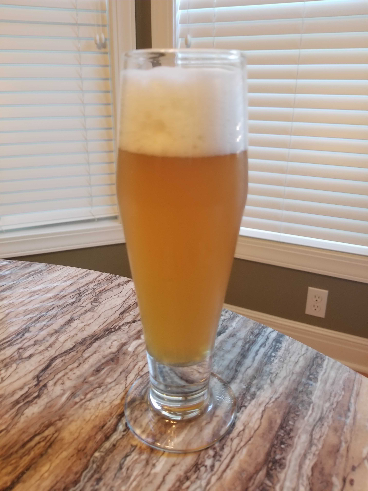

Brew number two at the house. This beer was a request from my father-in-law - he wanted a light wheat to drink by the pool. I happened to bump into a kit at my local home brew pro shoppe that matched the description pretty closely: a “KC summer honey wheat”. Apparently the kit is a clone of something local, but I didn’t catch what the original was supposed to be..
This brew was put together pretty easily - the ingredients from the kit, some extra sweet orange peel to add some nice summer citrus, and throw out the procedure in favor of the late extract / Palmer brewing method. For those not familiar with late extract brewing, its straightforward. The goal is to adjust the partial boil gravity to match what a full volume boil gravity would be such that the chemical reactions in the boil are the same as a full volume. This is done by removing some of the extract from the boil, and the remainder is added in at knock out for ~15 minutes to pasteurize. This approach turns out to be convenient for this brew anyway, since we steeped some orange peel after the boil once the wort temperature dropped to 170° for 15 minutes.
Dwight’s Orange Honey Wheat
General Information
| Batch Size | 5 gallons |
| Boil Size | 3 gallons |
| Batch Type | Full Extract, Partial Boil |
| Brew Number | 3 |
| Expected OG | 44 - 48 |
| Expected FG | 9 - 12 |
| IBU | SRM | OG | FG | ABV |
|---|---|---|---|---|
| 14 | 3 - 4 | 40* | 11 | 3.82%* |
* This was missed when brewed, but I believe the temperature was not accounted for when the original gravity was measured, resulting in a low OG measurement. Since this was from a kit and its extract I’m very much inclined to believe that the OG actually was probably around 44, and then the ABV would be closer to 4%. Worst case this actually did somehow have an OG of 40 and turned out to be a session beer.
Ingredients
| Wort A | |
| 1.65 lb | Briess Wheat Malt Extract |
| 0.5 lb | Wheat DME |
| Hops | |
| 1 oz | Mt Hood Hops (bittering) |
| 1 oz | Cascade Hops |
| Other Fermentables | |
| 2 lb | Clover Honey (boiled 5 min) |
| Wort B | |
| 1.65 lb | Briess Wheat Malt Extract |
| 0.5 lb | Wheat DME |
| Other Additives | |
| 1 oz | Sweet Orange peel (steeped at knockout 15 min) |
| Yeast | |
| 1 packet | Munton’s Dry Ale Yeast |
Hop Schedule
| Boil time | Amount | Type |
|---|---|---|
| 60 min | 1 oz | Mt Hood |
| 5 min | 1 oz | Cascade |
Yeast Procedure
The packet was rehydated with 1 cup of 80° previously boiled water.
Result

Note that this post was made about 4 weeks after this brew was ready to drink, and there have been noticeable changes from the first week of drinkability til now. I’ll try to highlight some of the differences as I go along.
Aroma
4 weeks out this beer has a slightly floury smell that reminds me of a bowl of dough that has been resting for awhile, but not so pungent. The smell itself is pretty light and takes a little work to dig out.
As I recall, fresh this had some nice orange hints to it. I can’t detect the orange this far out.
Flavor and Mouthfeel
This is pretty light on the palate and has a slight woven or thread-like texture. The majority of the flavor is bready, as one would expect from a wheat. There is still a honey sweetness in the beer, not much orange floating around right now.
There is also a very slight bubblegum flavor coming out, but that may just be because I’ve been mulling the flavor over so much - I really wasn’t expecting anything quite like that, but apparently Munton’s Ale Yeast can inpart that. If its there it meshes well.
Fresh this had some subtle orange hints and the honey came out quite nicely. The texture was actually more honey like fresh after bottling and less woven.
Finish
The main show finishes off quickly, and leaves a long lingering pucker til the next sip.
Fresh there was a little less pucker and the orange shined through.
Things to Try Next
This beer was a pretty big hit with the everyone I shared it with. Dwight said that his problem with the beer was that “there wasn’t enough of it,” so I’d call it a success. Since this worked out so well I’m definitely planning on making it again next summer.
There are a few major things I want to try out in this beer:
Honey and Orange
The honey and orange were really the ingredients I was most interested in, and will be playing with. The next time this is brewed I plan on tracking down some orange grove honey and maybe putting in an extra ounce of sweet orange peel to the steep.
I expected the orange peel to primarily show up in the aroma since it was steeped, but there could have been more. Steeping extra should really make it pop before a sip and hopefully the orange grove honey will make it stay through the sip.
Yeast
Since this is a wheat beer, the flavors are tied even more intimately with the yeast. The kit included the Munton’s, which worked out OK, but I’d plan on finding a nice, related wheat yeast that would work with the citrus I’m looking for.
Late Extract
The late extract / Palmer brewing method is what I plan to do for ever partial boil extract brew, and what was (mostly) done for this brew. However, this was brewed before I found the full explanation for the late extract method - I basically had only ever seen the rule of thumb of splitting up the extract into 1/2 chunks prior to this. In fact, this kit came with a separate instruction set for late extract that was super strange - the process was basically boil the hops for 5 minutes sans wort then pasteurize the wort at the end. Definitely ignored that.
The technique more specifically calls for adding in enough extract to make a wort with a gravity that matches the expected OG rather than adding it all into the boil with a super high gravity. This is pretty specific and I’m surprised I don’t see it more places.
Since I literally just split the wort in half, the next time I brew this as an extract I plan on taking the time to determine a more specific amount of extract to add to the boil.